how creative are you?

"How creative are you? It's up to you," says monumental artist Jun Kaneko. In the ancient Asian way of teaching, he inspires us by doing, not by instructing. You learn by example. Follow Jun Kaneko around the world in "Kaneko's Monumental Risk" as he explores the creative frontiers of ceramics, glass, bronze, and even opera stage design in cities like San Francisco, Kyoto, Puerto Vallarta, Shanghai and New York. Regardless of where you see his work–city parks, plazas, airports, theaters – his style and massive scale are unmistakably KANEKO.
Now, he is taking his greatest risk–the creation of three hours of projected animation on seven screens for the San Francisco Opera’s all new, six million dollar production of Mozart’s “Magic Flute.” Will his wildly abstract fusion of traditional Japanese art and American modernism work in an 18th Century German Opera? The over 3,000 patrons at the opera’s premier will decide. Has he finally gone too far? Or has he taken Mozart’s music into a magical new realm? Either way, Kaneko will inspire you to reflect on the nature of your own creativity.


 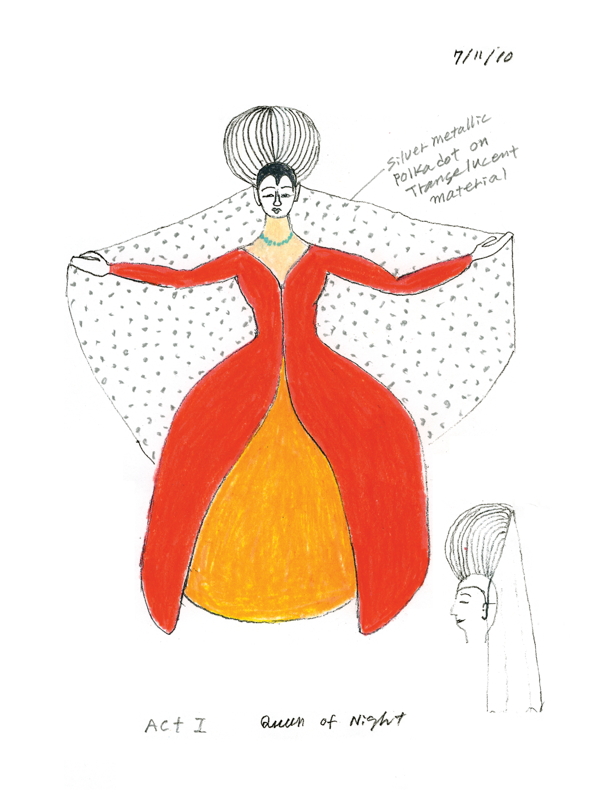
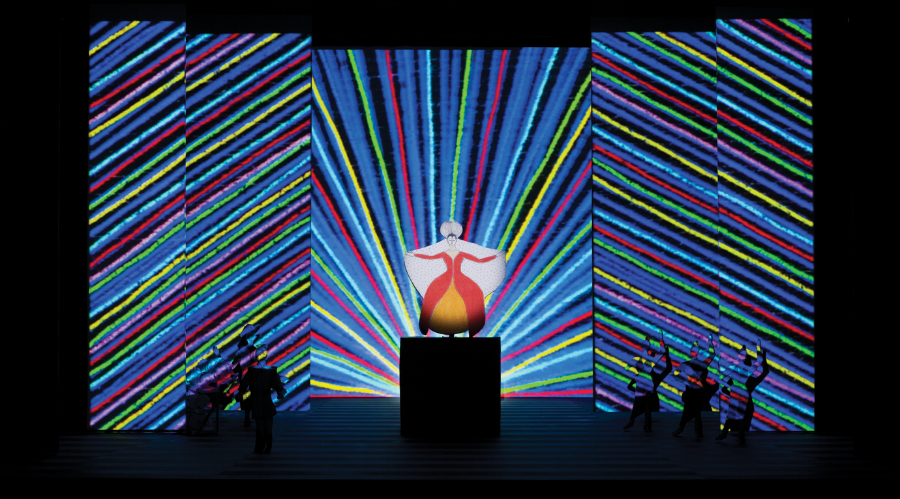
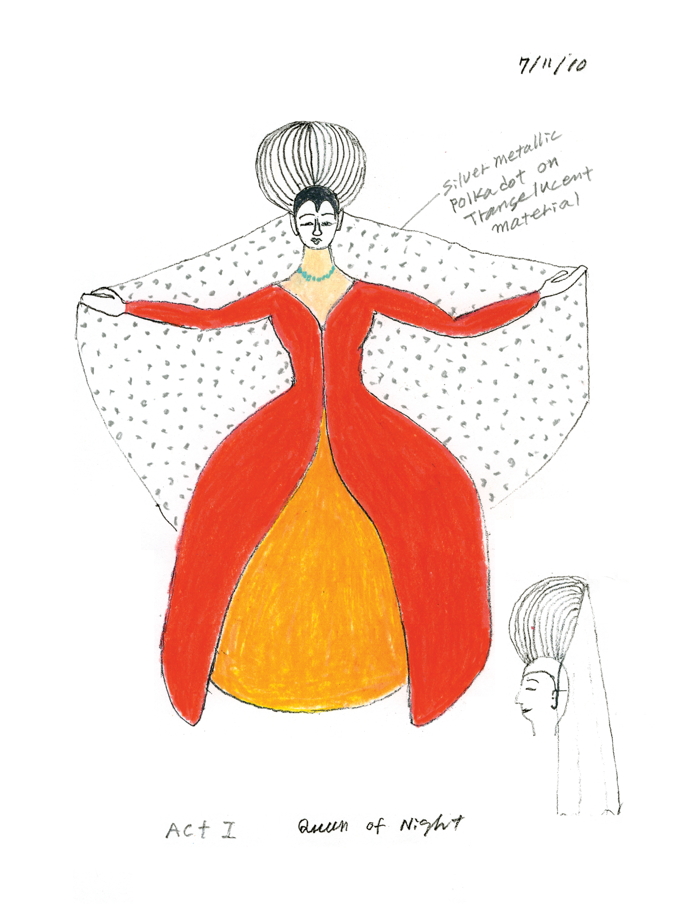
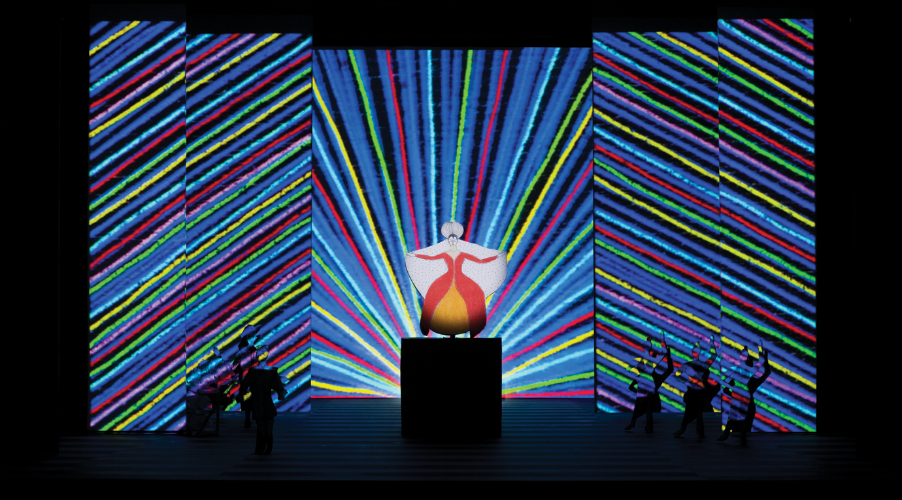

 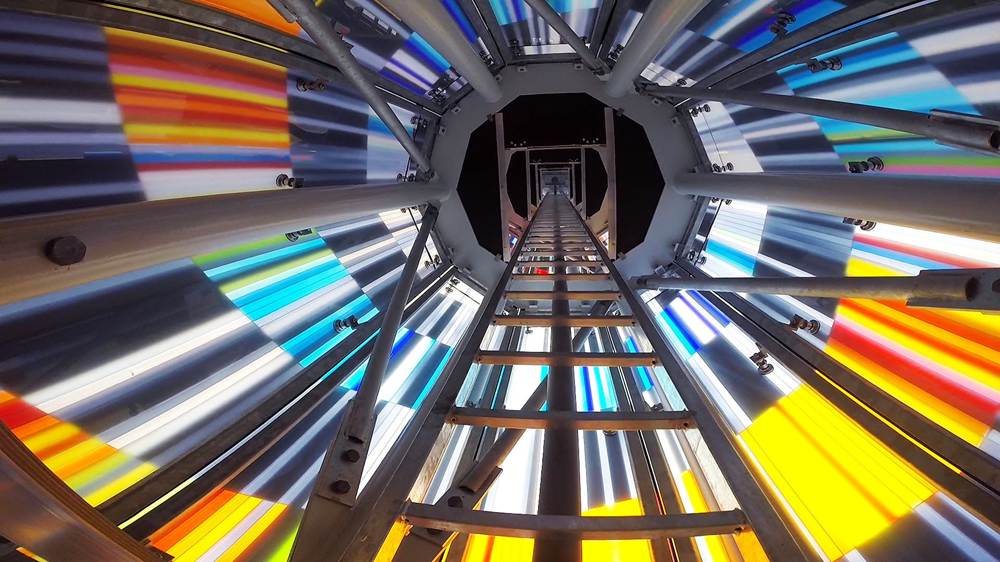
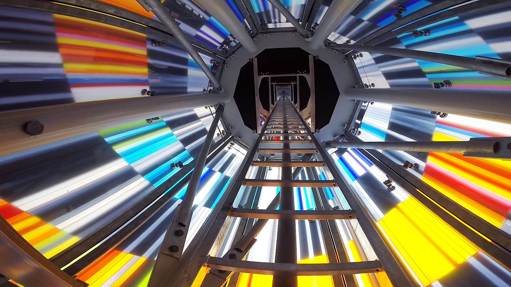
 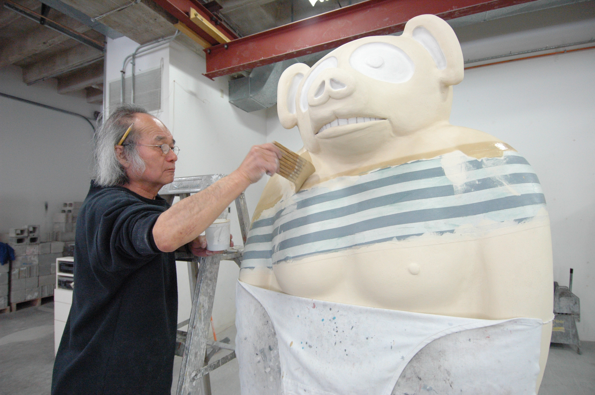
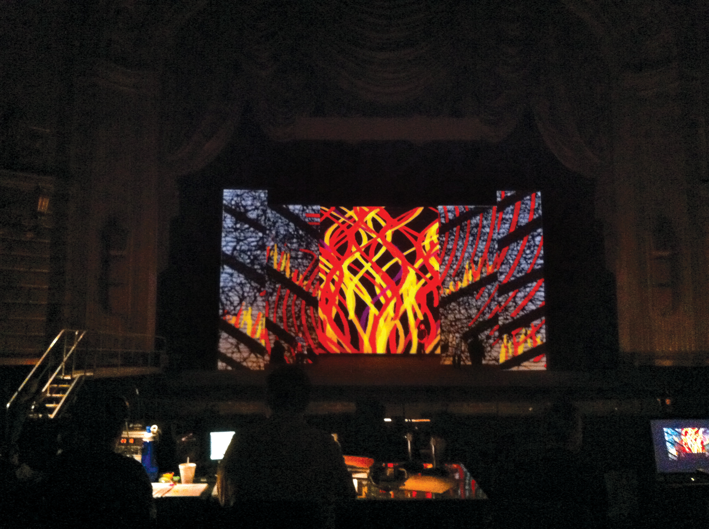
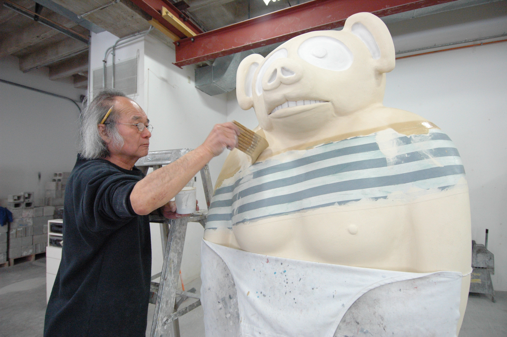
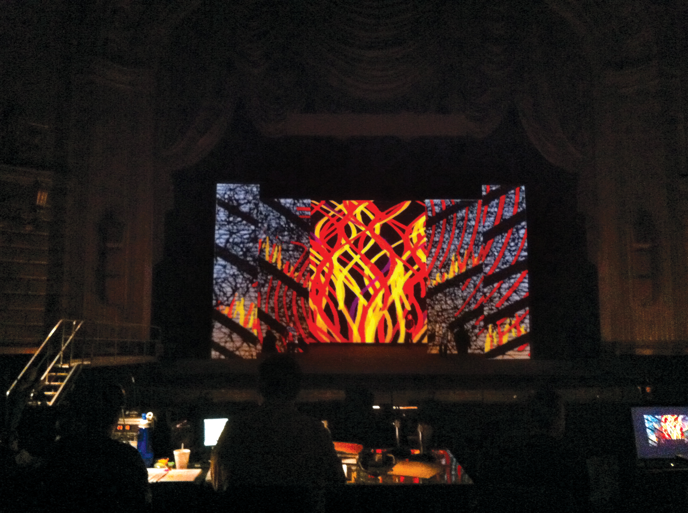
 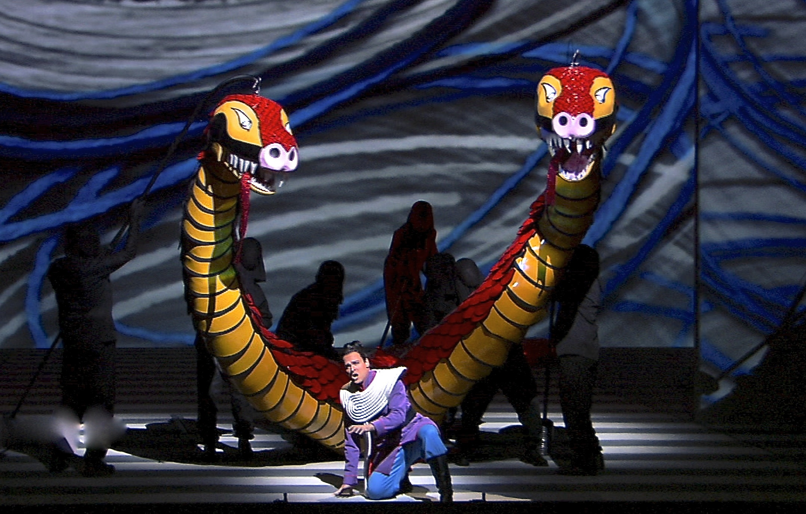
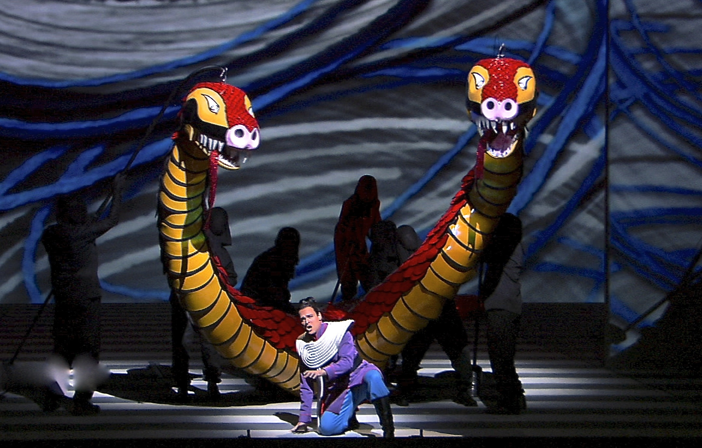